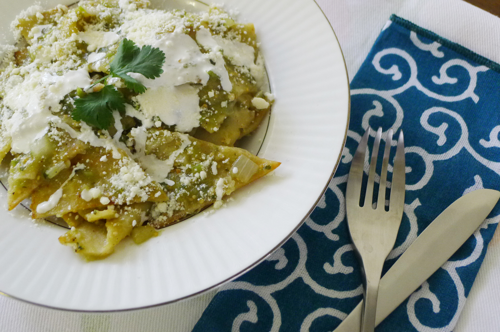

Authentic Green Chilaquiles recipe, ideal for a hangover morning

Description
The recipe is a green spicy sauce prepared using the below shown ingredients, this sauce can be seasoned with Epazote and/or Cilantro for enhancing flavors
For the tortilla part you may use Tostitos, there is a continuous discussion within Mexican community about this dish should be crunchy or not when served, it depends on ones preferences, but it can be decisive to determine whether you like it or not.
Ingredients
- 2 Lbs of tomatillos
- 1/2 onion
- 1 Garlic tooth
- 10oz of Epazote
- 10oz of Cilantro
- Salt
- 1 tsp olive oil or canola oil
- 4 cups of water
Steps
- Pour the water within a pot and add the tomatillos, boil them in until they get a softer green appearance
- Put the onion, garlic, salt and the water from the previous boiling tomatillos altogether within the blender and mix to puree
- Heat a pan and put the olive oil with a small chunk of onion, fry it, once the golden color is reached by the onion add the tomatillo puree
- Cook the salsa by 3 min
- Depending on your preference you can do either:
- Put the Tostitos in a plate and cover them with the salsa
- Decorate with shredded cheese and sour cream
- Add the Tostitos inside the pan to soften the tortilla
- Decorate with shredded cheese and sour cream
Back